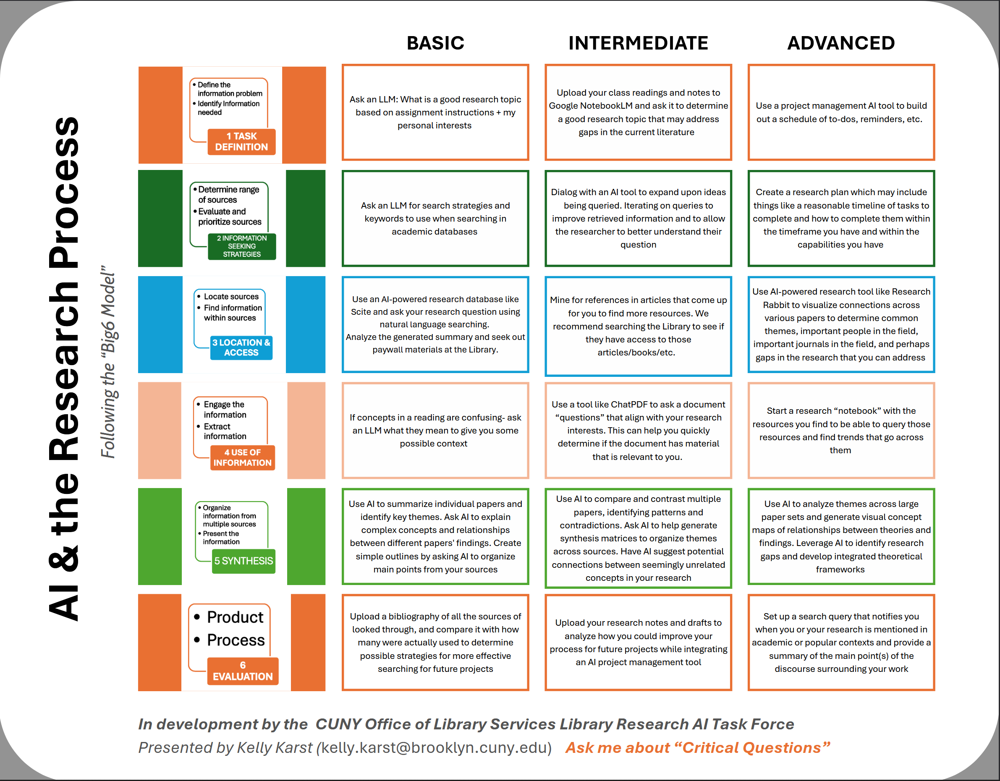

AI & Academic Research
Opening Questions for CUNY Libraries

Why Now?
- 100M + ChatGPT users
- Publishers adding “AI study assistants”
- AI tools integrated into research databases
- Faculty (including Library Faculty) are seeking guidance and structure to understand AI
- Students are using these tools willy-nilly, and need guidance on appropriate use
Two Disruptions We See
- Full‑paper outsourcing
- Shortcut searching / “AI summaries”
Modeling & Teaching
Good Research
- Demonstrate an AI‑integrated workflow—from idea to citation
- Teach critical evaluation of AI output alongside traditional sources
- Set transparent attribution & reproducibility standards
- Champion academic integrity—assistive use vs. outsourcing
Open Questions
for CUNY Libraries
- What defines a “well‑documented” AI‑assisted project?
- How do we embed that model into instruction sessions?
- Could a shared rubric help evaluate AI use in student work?
Possible Directions
Pilot • Draft Guidelines • Standards Working Group
Engage
or Cede the Conversation